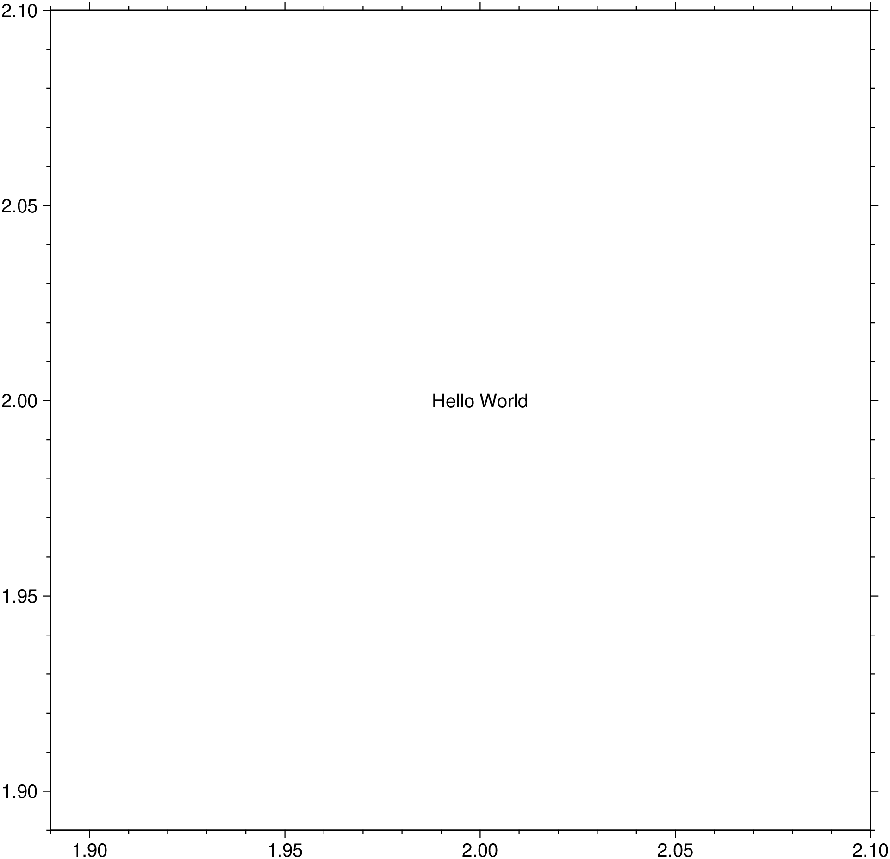

using GMT
text(["Hello World"], x=2.0, y=2.0, show=true)
Plot or typeset text on maps
text plots text strings of variable size, font type, and orientation. Various map projections are provided, with the option to draw and annotate the map boundaries. Greek characters, subscript, superscript, and small caps are supported as follows: The sequence @~ toggles between the selected font and Greek (Symbol). @% no % sets the font to no; @%% resets the font to the starting font, @- toggles subscripts on/off, @+ toggles superscript on/off, @# toggles small caps on/off, @; color; changes the font color (@;; resets it), @: size: changes the font size (@:: resets it), and @_ toggles underline on/off. @@ prints the @ sign. @e, @o, @a, @E, @O, @A give the accented Scandinavian characters. Composite characters (overstrike) may be indicated with the @!Char-esc-seq and Appendix Chart-Octal-Codes-for-Chars in the GMT Technical Reference and Cookbook. Note that PS_CHAR_ENCODING must be set to an extended character set in your gmt.conf file in order to use the accented characters. Using the fill or pen options, a rectangle underlying the text may be plotted (does not work for strings with sub/super scripts, symbols, or composite characters, except in paragraph mode (paragraph)).
textfile
A file containing 1 or more records with (x, y[, font, angle, justify], text). The attributes in brackets can alternatively be set directly via attrib. font is a font specification with format [size,][font,][color] where size is text size in points, font is the font to use, and color sets the font color. To draw outline fonts you append =pen to the font specification. The angle is measured in degrees counter-clockwise from horizontal, and justify sets the alignment. If font is not an integer, then it is taken to be a text string with the desired font name (see list for available fonts). The alignment refers to the part of the text string that will be mapped onto the (x,y) point. Choose a 2 character combination of L, C, R (for left, center, or right) and T, M, B for top, middle, or bottom. e.g., BL for lower left.
textrecord
A GMTdataset type that can be obtained with the mat2ds(mat, txt) function, where mat is a MxN with the x,y(,z) coordinates and txt a string vector with the desired text.
rich()
The rich() function is a convenient function to plot text whose parts have different colors, fonts, font sizes, subscripts, superscripts, greek letters, underline, small caps and LaTeX equations. Text generated with this functions can also be used in titles, labels, legends, etc… Se example at the end of this page.
(text, x=?, y=?)
As a third alternative, provide the input data in a form of a string vector and x and y vector coordinates, or just a x=mat where mat is MxN matix. In the particular case where the text is a single string one may use the (text=“txt”, x=?, y=?) form.
A or azimuth or azim : – azimuth=true
Angles are given as azimuths; convert them to directions using the current projection.
B or axes or frame
Set map boundary frame and axes attributes. Default is to draw and annotate left, bottom and vertical axes and just draw left and top axes. More at [frame](../common_opts/opt_B.html)
C or clearance : – clearance=true | clearance=(margin=(dx,dy), round=true, concave=true, convex=true)
Adjust the clearance between the text and the surrounding box [15%]. Only used if pen or fill are specified. Append the unit you want (cm, inch, or point); if not given we consult PROJ_LENGTH_UNIT) or % for a percentage of the font size. Optionally, use options round (rounded rectangle) or, for paragraph mode only, concave or convex to set the shape of the textbox when using fill and/or pen. Default gets a straight rectangle.
D or offset : – offset=([away=true, corners=true,] shift=(dx,dy) [,line=pen])
Offsets the text from the projected (x, y) point by shift=(dx, dy). If dy is not specified then it is set equal to dx. Use offset=(away=true,) to offset the text away from the point instead (i.e., the text justification will determine the direction of the shift). Using offset=(corners=true,) will shorten diagonal offsets at corners by sqrt(2). Optionally, use offset=(line=true,) which will draw a line from the original point to the shifted point; use offset=(line=pen,) to change the pen attributes for this line.
F or attrib : – attrib=(angle=val, font=font, justify=code, region_justify=code, header=true, label=true, rec_number=first, text=text, zvalues=format)
By default, text will be placed horizontally, using the primary annotation font attributes (FONT_ANNOT_PRIMARY), and centered on the data point. Use this option to override these defaults by specifying up to three text attributes (font, angle, and justification). Use font=font to set the font (size,fontname,color). For example font=18 or font=(18, “Helvetica-Bold”, :red); if no font info is given then the input file must have this information in one of its columns. Use angle=val to set the angle; if no angle is given then the input file must have this as a column. Alternatively, use Angle=val to force text-baselines to convert into the -90/+90 range. Use justify=code to set the justification; if no justification is given then the input file must have this as a column. Items read from the data should be in the same order as specified with the F option. Example: font=(18, “Helvetica-Bold”, :red), justify=““, angle=”“ selects a 12p red Helvetica-Bold font and expects to read the justification and angle from the file, in that order, after x, y and before text. In addition, the region_justify justification lets us use x,y coordinates extracted from the region string instead of providing them in the input file. For example region_justify=:TL gets the x_min, y_max from the region string and plots the text at the Upper Left corner of the map. Normally,the text to be plotted comes from the data record. Instead, use header=true or label=true to select the text as the most recent segment header or segment label, respectively in a multisegment input file, rec_number=first to use the record number (counting up from first), text=text to set a fixed text string, or zvalues to format incoming z values to a string using the supplied format (zvalues=““ uses FORMAT_FLOAT_MAP). Note: If threeD is in effect then the z value used for formatting is in the 4th, not 3rd column. Exceptionally, this option can be broken up in its individual pieces by dropping the attrib keyword.
outline : – outline=true | outline=“thk,color”
Plots an outline arround the text. By setting outline=true we plot a 1 point white outline around the text. To control the outline pen use the form “thickness,color”. For example outline=“3p,red” adds a 3 points thickness red outline.
G or fill : – fill=color | fill=:c
Sets the shade or color used for filling the text box [Default is no fill]. Alternatively, use fill=:c to plot the text and then use the text dimensions (and clearance) to build clip paths and turn clipping on. This clipping can then be turned off later with clip C. To not plot the text but activate clipping, use fill=:C instead.
J or proj or projection : – proj=
Select map projection. More at [proj](../common_opts/opt_J.html)
L or list : – list=true
Lists the font-numbers and font-names available, then exits.
M or paragraph : – paragraph=true
Paragraph mode. Files must be multiple segment files. Segments are separated by a special record whose first character must be flag [Default is >]. Starting in the 3rd column, we expect to find information pertaining to the typesetting of a text paragraph (the remaining lines until next segment header). The information expected is (x y [font angle justify ] linespace parwidth parjust), where x y font angle justify are defined above (font, angle, and justify can be set via F), while linespace and parwidth are the linespacing and paragraph width, respectively. The justification of the text paragraph is governed by parjust which may be l (eft), c (enter), r (ight), or j (ustified). The segment header is followed by one or more lines with paragraph text. Text may contain the escape sequences discussed above. Separate paragraphs with a blank line. Note that here, the justification set via justify applies to the box alignment since the text justification is set by parjust.
N or noclip or no_clip : noclip=true
Do NOT clip text at map boundaries [Default will clip].
Q or change_case : – change_case=:lower | change_case=:upper
Change all text to either change_case=:lower or change_case=:upper case [Default leaves all text as is].
R or region or limits : – limits=(xmin, xmax, ymin, ymax) | limits=(BB=(xmin, xmax, ymin, ymax),) | limits=(LLUR=(xmin, xmax, ymin, ymax),units=“unit”) | …more
Specify the region of interest. More at [limits](../common_opts/opt_R.html). For perspective view view, optionally add zmin,zmax. This option may be used to indicate the range used for the 3-D axes. You may ask for a larger w/e/s/n region to have more room between the image and the axes.
S or shade : shade=true | shade=(dx,dy) | shade=shade
Plot an offset background shaded region beneath the text box. Here, (dx,dy) indicates the shift relative to the text box in points [4p, 4p] and shade sets the fill color to use for shading [gray50]. Requires the fill option.
U or time_stamp : – time_stamp=true | time_stamp=(just=“code”, pos=(dx,dy), label=“label”, com=true)
Draw GMT time stamp logo on plot. More at [timestamp](../common_opts/opt_U.html)
V or verbose : – verbose=true | verbose=level
Select verbosity level. More at [verbose](../common_opts/opt_V.html)
W or pen : – pen=pen
Sets the pen used to draw a rectangle around the text string (see clearance) [Default is width = default, color = black, style = solid].
X or xshift or x_offset : xshift=true | xshift=x-shift | xshift=(shift=x-shift, mov=“a|c|f|r”)
Shift plot origin. More at [xshift](../common_opts/opt_X.html)
Y or yshift or y_offset : yshift=true | yshift=y-shift | yshift=(shift=y-shift, mov=“a|c|f|r”)
Shift plot origin. More at [yshift](../common_opts/opt_Y.html)
Z or threeD : – threeD=true
For 3-D projections: expect each item to have its own level given in the 3rd column, and noclip is implicitly set. (Not implemented for paragraph mode).
figname or savefig or name : – figname=name.png
Save the figure with the figname=name.ext where ext chooses the figure image format.
a or aspatial : – aspatial=??
Control how aspatial data are handled in GMT during input and output. More at
e or pattern : – pattern=??
Only accept ASCII data records that contain the specified pattern. More at
f or colinfo : – colinfo=??
Specify the data types of input and/or output columns (time or geographical data). More at
h or header : – header=??
Specify that input and/or output file(s) have n header records. More at
i or incol or incols : – incol=col_num | incol=“opts”
Select input columns and transformations (0 is first column, t is trailing text, append word to read one word only). More at incol
p or view or perspective : – view=(azim, elev)
Default is viewpoint from an azimuth of 200 and elevation of 30 degrees.
Specify the viewpoint in terms of azimuth and elevation. The azimuth is the horizontal rotation about the z-axis as measured in degrees from the positive y-axis. That is, from North. This option is not yet fully expanded. Current alternatives are:
bar3!) More at [perspective](../common_opts/opt_p.html)q or inrows : – inrows=??
Select specific data rows to be read and/or written. More at
The PostScript language originally had no accommodation for transparency. However, Adobe added an extension that allows developers to encode some forms of transparency using the PostScript language model but it is only realized when converting the PostScript to PDF (and via PDF to any raster image format). GMT uses this model but there are some limitations: Transparency can only be controlled on a per-object or per-layer basis. This means that a color specifications (such as those in CPTs of given via command-line options) only apply to vector graphic items (i.e., text, lines, polygon fills) or to an entire layer (which could include items such as PostScript images). This limitation rules out any mechanism of controlling transparency in such images on a pixel level.
In paragraph mode, the presence of composite characters and other escape sequences may lead to unfortunate word splitting. Also, if a font is requested with an outline pen it will not be used in paragraph mode. Note if any single word is wider than your chosen paragraph width then the paragraph width is automatically enlarged to fit the widest word.
To plot just the red outlines of the (lon lat text strings) stored in the file text.txt on a Mercator plot with the given specifications, use
To plot just the “Hello World” and let the program estimate the region, do
A similar example but using the outline option to plot a 3 points green outline.
Example using the rich function (reproduces the original example in Makie).
using GMT
text(rich("H", subscript("2"), greek("O")," is the ", smallcaps("formula")," for ",
rich(underline("water"), color=:red, font="Helvetica", size=16)), x=1, y=1, frame=:none)
str = "A BEAUTIFUL RAINBOW";
C = makecpt(range=(1,length(str)+1,1));
fontsizes = 20 .+ 10 .* sin.(range(0, 3pi, length = length(str)));
rainbow_chars = map(enumerate(str)) do (i, c)
rich("$c", color = GMT.arg2str(Tuple(round.(Int,C.colormap[i,:].*255))), size = fontsizes[i]);
end
text!(join(rainbow_chars), x=1, y=0.99, font="Helvetica-Bold", show=1)